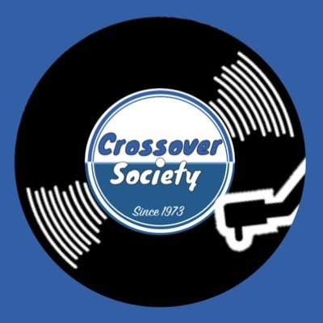

プロフィール
大学：慶應義塾大学
高校から慶應に入る。無事ストレートで進学してきたが、今年休学をしたことで1つダブることとなった。

出身地：シンガポール
1997年8月7日に私が生まれた場所。1歳までしかいなかったため記憶はない。

サークル：クロスオーバー研究会
フュージョンと呼ばれるジャンルを扱うサークル。ここで楽器上級者に飲まれつつも自身を成長させてきた。
大学４年生(休学中)
高校から慶應に入る。無事ストレートで進学してきたが、今年休学をしたことで1つダブることとなった。
1997年8月7日に私が生まれた場所。1歳までしかいなかったため記憶はない。
フュージョンと呼ばれるジャンルを扱うサークル。ここで楽器上級者に飲まれつつも自身を成長させてきた。